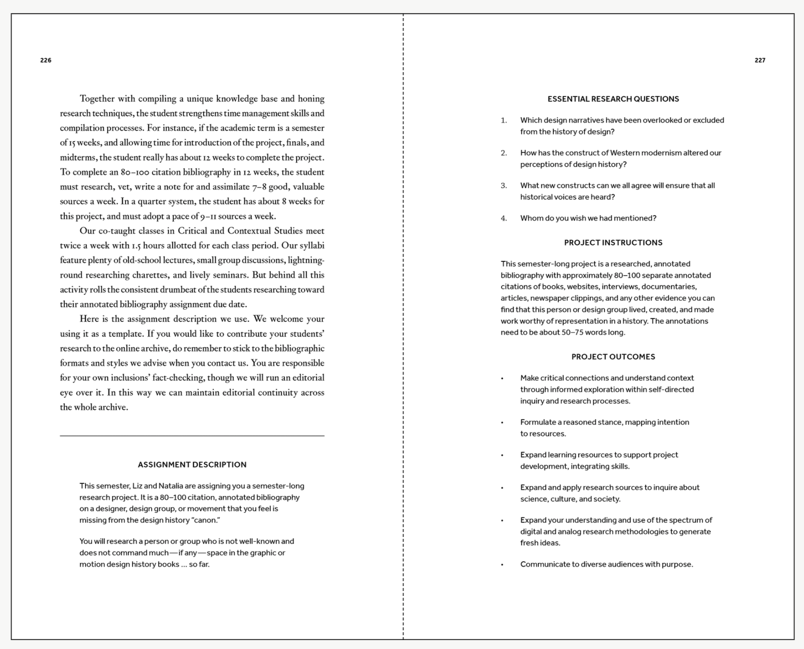

In her essay Wen Huei Chou looks at the meta-discourses of Euro-American Modernism and Postmodernism rooted in privilege and prejudice in relation to graphic design history and considers an alternative approach to writing design histories for two countries settled on the peripherals of the economic, technical, cultural and geographic axis of Euro-America: Taiwan and Australia.
Before it was considered a professional field, graphic design was conventionally classified as art and the remnants of these associations continue to have consequences for making the parallel narratives of graphic design history mainstream. Chou wrote in 2006 that there has been a call over the last two decades to review the perspectives and linear approaches absorbed into design history from art history, and I would argue that the call for this to happen has continued. I think for those who are eager to look, they will find alternative histories, otherwise they remain hidden.
Recently, I’ve heard a number of mentions about design histories falling through the cracks due to geography, and perhaps the way graphic design modeled itself after art history, these cracks were intentionally open so some work would continue to rise while others continued to be ignored. Tony Fry, in his paper A Geography of Power: Design History and Marginality published 1989 talks about regional-based marginalization and calls for territory-specific design histories to be conducted in response to Modernist-based biases. I think it’s interesting to speculate about how we would tell these regionally-specific parallel narratives. Fry suggests, “In contrast to the canonical account of design presented in such histories, an Australian design history would explore the nature and nurture factors that enabled the rewriting of design history specific to Australia, simultaneously uncovering the reasons for why its history has been ignored.”

Bradford R. Collins goes further in 1995 to argue that “after Postmodernism, issues of bias against women and minorities in art historical research have been sufficiently challenged to invalidate the tendency to establish categorically exclusive canons of design and designers.” I’m not sure “sufficiently” is the best word to use here as these issues persist today, 25 years later. I would argue that challenging the binary ideas put forth by Modernism will not be sufficient for a long time, and to constantly question and challenge these conventions is the never-ending work of not only good designers but good citizens.
As a woman, student, and young designer, I have noticed a shift in my research of design history from the categorically exclusive canons of design and designers towards the need to focus on those who have historically held space in the peripherals, in my examination of texts from the early to mid to late twentieth century to present-day writing. Chou states that despite the calls to challenge the conventional systems that dictate graphic design history, the field continues to be influenced by three stubborn factors: art history, Modernism (capitalism, technology, progress), and social science (material culture).
She writes that while Euro-American design histories have dominated the landscape thanks to the cultural imperialism of capitalism and Modernism, each and every sidelined culture has developed its “unique perspective on the material world in which it is embedded and that it transforms.” The effects of this damning combination did, and do not affect design alone but numerous fields. Admirably, journals such as Design Issues and Journal of Design History have stressed the “urgency and importance of redrawing the map of world design and rethinking design history,” suggesting the critical value that geography plays in design history exposure.
Taking a closer look at Taiwan, Chou argues that for the health and development of Taiwanese design and design education, it is “critical that we rebuild our design characteristics and capabilities from scratch on the basis of solid historical research into what Taiwanese design has been.”
Design history in Taiwan cannot be talked about without talking about the influence of Hong Kong and Mainland China. Chou cites design historian Matthew Turner who in 1995 wrote that the design history of Hong Kong before 1960 was believed not to exist. Wendy Siuyi Wong believes Chinese design history was not acknowledged by the West before 1960 because before China’s “‘open gate’” policy, enforced in 1979, the majority of design took the form of communist propaganda. Taiwanese design was seen to be inspired and influenced by Hong Kong and Mainland China, according to Wong.
Chou writes that the design work coming out of Taiwan in the thirty years prior has reflected an “eagerness to adopt the style of capitalistic metropolis and European society.” I’ll cross reference this idea with one put forth by Sylvia Harris in her mid-1990s essay Searching for a Black Aesthetic in which she describes the tendency of young black designers to imitate modernist work as a way to assimilate into and survive in the design field. Backing up my intuition, Chou continues: “the design history of China and other Asian countries (with the exception of Japan) is considered an imitation of the cultural value systems of Western industrialized countries.” Trapped in a cycle from hell in which design was born, Chou writes that the West went on to neglect the “development and value of design in these areas. Worse, these industrialized countries considered the output of developing Asian nations as of their own making, as duplicating and producing design for/from them.”
I was interested that Chou made the connection between architecture and industrial design (and craft history) and graphic design as a subsection of the aforementioned. She writes that these industries have proved to be an obstacle to the development of Taiwanese graphic design compared to the “rapid expansion of graphic design practice.” Since I’m currently writing an essay on this, I think there’s space to argue that the rapid expansion of the rest of the graphic design industry has been so rapid for its monetary appeal to a capitalist economy (what am I trying to say here, I’m not making sense). Chou cites the lack of foreseeable capital as one of the factors that continues to squash the efforts to establish a professional field of graphic design history research in Taiwan.
Thinking forward, while design practitioners and non-practitioners have for so long been blinded by the influence of capitalism, modernization, and industrialization, things are finally coming into focus and Chou writes that we “finally have the chance and capability to reveal their hegemony over our cultural discourses.”

Chou goes on to say something similar to Sheila Levrant de Bretteville once said, which I’ve returned to at least twice since I first read it. Chou writes, “To study the history of graphic design and education in Taiwan, we must therefore understand the history of the early migrants from the Southern mainland, the living conditions and utensils used by aborigines, the influences of fine art design and the industrial revolution under Japanese rule, of coastal cities and Hong Kong, and take race, colonialism, manufacturing and production practices, as well as the shifting political environment, into consideration.” I wrote a note next to this that says, “Wow, a lot of things in here.” Ultimately, I think that in order to move forward in creating and updating design histories that have long been ignored, we have to look inward at our own pasts and pain.
Since Chou wrote this essay in 2006, she suggests that there is profit in producing work on design history from within “marginalized” areas and similarly, in the 14 years since this essay was published, there has been evidence of companies capitalizing on cultural movements: a Heineken ad which shows two people from different sides of cultural debates having a conversation over one of their beers, or this Pepsi ad featuring Kendall Jenner in which she hands a Pepsi to a police officer and the crowd cheers. I have hope that these movements indicate a wider cultural shift that implores all professional industries to decolonize the structures in which we operate.
Chou: “It is vital — especially as it now profitable to produce work on design history from within ‘marginalized’ areas — that this history not be based merely on a historical viewpoint of the past and that it should encapsulate new viewpoints and research methods.” Chou writes that countries similarly marginalized — Turkey, Mexico, India, Brazil and Cuba — are “now in a position to rewrite and interpret their own local design cultures and histories.” And I think she’s right. I think people are interested and motivated to unravel the webs of white washing and colonialism and include the once neglected work by under-represented designers in their research, and while I know that not all institutions teaching graphic design are as motivated, I know others that are.
My final thoughts seem to consistently return to the idea that writing about the shameful marginalization linked to graphic design history is not enough and we, as designers, must move to the trenches of libraries, classrooms, and places still unknown to talk to people, conduct research and write new histories to make some real moves here.
When Bridget Wilkins wrote this essay in 1992, she said that graphic design history is modelled on the earliest approaches to art history, and that includes the “hero” approach, emphasizing the designer’s personality over communication. It sounds like Martha Scotford in her essay Is there a Canon of Graphic Design History? , was treading on similar ground. In this essay, written a year later, Wilkins doesn’t offer an opinion on whether she thinks the hero approach is good or bad, but I think she means it disadvantageously since it’s under a section titled “Old-Fashioned Approaches.”
Most narrative histories of graphic design are linear, she writes, including categories like “corporate identity” or “New Wave,” and “these linear concepts of history are ignoring some of the central issues in graphic design; and the strangest thing about traditional graphic design history is that while the technology of the time dictates how designers are able to dictate, the narrative retelling the history largely ignores how the communication is received. It is only with the inclusion of this normally absent context that there can be meaningful and constructive comprehension of history.”
Wilkins essay is short, but she brings up an interesting point about the value of graphic design in the hierarchy of the design realm, which is at the bottom. While typewriters, early refrigerators, and other arifacts sit in museums under glass, pieces of graphic design are absent, and why? Graphic design is more ephemeral than other pieces that might live in museums; Wilkins argues that “we should not allow a preoccupation with financial and aesthetic value to blind us to the historical value of all graphic ephemera.”
She introduces the idea of a product consumed versus a product received, and argues that graphic design is consumed less and received more, like a phone book or street poster. Wilkins says that graphic designers must “capitalise on this and use it to relate the objects to their context in a meaningful way. If most graphic design is seen, used and owned by the public, why should it not have a lively history that constructively explores and communicates its qualities?”
I feel like most people don’t even know that they’re absorbing graphic design every day, and perhaps this is why museums have traditionally overlooked pieces of graphic design history, but Wilkins points out that everyone has ideas about the look of their newspaper or the appropriateness of using someone suffering from HIV/AIDS in a billboard ad. Yes, they may have this opinion about the things they’re absorbing, but I don’t think they see it as graphic design.
Both Scotford and Wilkins in their essays are talking about hierarchies and the danger of placing a high value on them. I think no matter what industry you’re in, there’s danger in that because if we see one thing as the most important, another thing or group of people is inevitably excluded; Wilkins addresses this in terms of culture: “An excessive concentration on the look of a piece of graphics also ignores the fact that we live in multicultural societies and that visual images are understood by different cultures in different ways.”
In this essay by Teal Triggs, I thought it was interesting that she frames her argument with a statement on content and form: “Any approach to the study of graphic design and its history needs to take into account the form of the graphic object just as much as the nature of the content.” I don’t think I’ve seen this idea addressed explicitly in any other essay I’ve read on graphic design history. She continues: “Victor Margolin (1996) has argued for a move away from a ‘history of objects...toward a history of practice…’ as a way of recognizing that there are multiple histories to consider.”
The idea of designer-authored histories and self-authorship structures a large part of the essay, and initially I wasn’t sure if Triggs was arguing for or against this self-authorship, or just making the reader aware that this constitutes a large portion of graphic design history texts: for example, Philip Meggs’ A History of Graphic Design (1983), Josef Müller-Brockmann’s A History of Visual Communication (1971), and James Craig’s Thirty Centuries of Graphic Design (1987), which I’m citing for their frequency of use in classrooms as noted by Martha Scotford in her essay and study “Is There a Canon of Graphic Design History?”
I think about the role of the historian, who we rely on (often blindly) to research, synthesize, and chronicle histories of music, politics, science, art, architecture etc., when history is not fact, but one narrative chosen by the writer. It hits me that historians aren’t objective; why did I believe that they are supposed to be? Am I confusing historian work with journalism? I must question whether I can trust journalism — I cannot trust it blindly. I have a history of being gullible and believing whatever The Man says is true; I’m getting better.
In reflecting on her findings to determine if there is a canon of graphic design, Scotford notes “the absolute lack of women” on the list of 63 designers/partners who made significant appearances in graphic design texts that “represent the best known general historical surveys of the past twenty years.” While Scotford is critical of the lack of gender diversity in the might-be-canon, she doesn’t mention the devastating lack of racial diversity represented in her selected texts. If these white male, author-historians of traditional graphic design history texts are the originators of the messages they output, wouldn’t their narratives reflect graphic design through the superior, white experience? Now that I’ve faced this information it seems obvious. “History is not fact,” said Pierre Bowins, an Assistant Professor in Studio Arts at the University of Maryland Eastern Shore, in a micro lecture titled The Missing Chapter(s): Some History About Black Graphic Design. “It is only a collection of past people and events based on their impressions and the events that have occurred. It is always subject to revision and reinterpretation as new eyes and insights are made aware. We have a chance to make a difference here.”
By the end of my first residency at VCFA, I sensed resentment among faculty toward these conventional history texts and I wondered, “If these books are generally accepted as the foundation of graphic design history, and the foundation is inherently flawed, and I have no idea what I’m doing, then where do I start?” I wish I could have told myself about Parallel Narratives (which wasn’t yet published), written by Cornish College of Arts students in Seattle under the direction of educators Elizabeth Patterson and Natalia Ilyin, and about readers like Graphic Design: History in the Writing (1983-2011) that contains essays that are critical of industry-standard texts; I would have encouraged myself to research overlooked designers outside of the New York elite, which might provide a path to the history of black designers in Chicago, like Tom Miller of Goldsholl Design Associates, and the Japanese American designer Fred Ota of the same firm. VCFA Chair Nikki Juen echoes Bowin’s statement about the disparity between history and fact: “History is not mono-locational.”
Appearing on Jarrett Fuller’s podcast Scratching the Surface in May 2019, Ilyin tells Fuller, “Nobody questioned the notion that history was not a linear progression out of the darkness and into the light and that design history was this famous person, this famous person, this famous male, white person, and that’s what it was, and none of us questioned that. So I had a moment to say, ‘Actually, I hate all of this, and exactly where am I supposed to stand?’” She says that she wrote Chasing the Perfect (2006) after she came face to face with the pervasiveness of the “modernist agenda” in the mid-1990s working as Programs Director for AIGA where she met and brought coffee to the most famous designers of the time, who she describes as “all those old modernists who started dying off around then.”
Similar to the argument that surrounds postmodernist graphic design which asks, if it is necessary to know the ways of modernism before knowing how to break them, is it necessary to study the texts conceived within oppressive structures before diving into texts dedicated to designers underrepresented, to ensure the complacency of the latter stays in the past? I wonder about graphic design histories written by people of color, women, and women of color, and what it might look like through their eyes.
Triggs cites Johanna Drucker and Emily McVarish’s Graphic Design History: A Critical Guide (2008) and mentions their intention to contextualize the “social forces and conditions of their production’ of the work in order to provide insight into the way we understand practice today.” She also mentions Stephen J. Eskilson’s Graphic Design: A New History published a year before Drucker and McVarish’s, which Eskilson said he wrote to present graphic design history alongside “‘significant social context.’” Yet, both of these texts are devoid of work by black designers, according to Bowins in his aforementioned micro lecture.
I’m hit with another thought: I can’t think of anyone who is considered alone a historian of graphic design (until I came across Jeremy Aynsley in Triggs’ essay and Doug Scott in Jarrett Fuller’s podcast with Natalia Ilyin) — let alone a black graphic design historian. Triggs notes, “Although the 1980s saw a plethora of books on industrial design and related areas, graphic design in general was not attracting the same attention from historians.” Aynsley notes that the broad nature of graphic design inherently makes the history of graphic design broad, “‘covering anything from the design of a bus ticket to sign systems for motorways, [to] packaging of cigarettes to the typographical organization of dictionaries, [and] the design of the lead-in to nightly television news to art-directing a magazine.’”
Many design critics have stepped into the historian role (Steven Heller, Johanna Drucker), as well as many designers (Ellen Lupton, J. Abbott Miller); I wonder how this has influenced the stories we’ve told ourselves about graphic design. Triggs makes a note on the critical distance in self-authored histories. To be clear, I don’t think anyone, anywhere must limit themselves to one identity for their work to be well founded — just being a historian, a designer, a design critic — but I notice a difference between the traditional historian who researches and perhaps teaches a particular time period, geographic region, or cultural shift, and the historian who researches graphic design: the graphic design historian often occupies several roles in addition to historian: designer, design critic, author, professor, art director, editor, journalist, illustrator.
Triggs mentions Ellen Lupton, who argues that there is a difference between the designer as originator of content and as producer who is part of the system of making. She continues to propose that “graphic designers might ‘actively mediate between form and content,’” to which Triggs asks, “If this is the case, then in what way might publications in which the graphic design is both the producer and author represent an alternative view of history?” To me, it seems that the designer hovers over both the originator of content and producer buckets. The person who designs the content of a book appears to me to be the originator of that work, and today many designers are fully capable of producing their own books; I think the line between originator of content and producer is ambiguous.
The publication of little magazines as a form of social and cultural documentation, Triggs says, were a way for designers to maintain control over the content they were designing. They are not client-driven, but stylistically similar to fan magazines and “seek to address a design-literate demographic on its own terms” — projects that were written and produced by graphic designers. I had hoped at this point that Triggs would have provided an example of a little magazine, because I wasn’t sure that I’d ever heard of that term and a Google search came back ambiguous. But it sounds like a little magazine is an independently produced publication that caters to a design audience.
The roots of little magazines might be traced to the 1980s when Triggs says a “new breed of design history emerged, [one that] embraced material culture as an approach to studying the design artifact, taking into account not only the socio-historical context but also the process of design and production.” Looking deeper past the surface of graphic design is “...pop culture’s politics [that] continue to be formed not only by the historical context and the individual readers who experience it, but also by the ongoing class battle over who determines culture.’”
It’s interesting that the once underground language of resistance became a “cool” message for consumers (she cites British punk zine Sniffin’ Glue, and the more political, anti-capitalist Adbusters comes to mind — the magazine receives no funds from digital or print advertising). Triggs writes, “The graphic design publications under discussion in this essay are not oppositional in the sense of being political interventions, but rather express, as the fanzines did before them, the need to be linked to other link-minded individuals and to be considered as an integral part of such a group.” I make a note that Adbusters is a publication which Triggs says her essay is not about.
As a case study, Triggs cites little magazine The National Grid, launched in 2006 by Luke Wood and Jonty Valentine who had hoped to plug “‘the void in New Zealand’s design discourse.’” Wood and Jonty write in issue one: “I think it would be interesting if graphic design could look at itself in relation to music rather than architecture or industrial design. Then we wouldn’t have to talk about problem solving, and we could talk about resonance instead.” I thought this was an interesting idea, and it made me think about the intersection of design and problems. I think that if we look at the big picture, graphic design can’t really solve cultural issues, but I think perhaps it can solve the issue of communicating those issues. Interestingly, the position of the magazine reflects their geography: “[The National Grid] aims to be a peripheral publication for graphic design… a periphery is an outer edge, an imprecise boundary of some domain. And therefore that, as our domain is graphic design, we will be calling ourselves peripheralists… as opposed to centralists.’”
When she wrote Triggs essay, The National Grid had not yet been addressed in mainstream design press (I can’t find an instance since then where it has). She writes, “its value resides in its attitude. No longer are graphic designers treating history and their subject in a linear fashion: the incorporation of perspectives on popular culture opens up the possibility of looking at the individual, the everyday and the ‘cultural object as the primary source of meaning.’”
Triggs writes that little magazines have been pivotal in this shift and acknowledges the valuable insights that have come from self-produced design publications, and that may be true, but it’s also glaringly obvious being a graduate student studying graphic design at VCFA that credit must also be given to design educators who recognize the destruction in retelling a linear, individualistic, white, euro-centric history and claim it as their mission to change it.